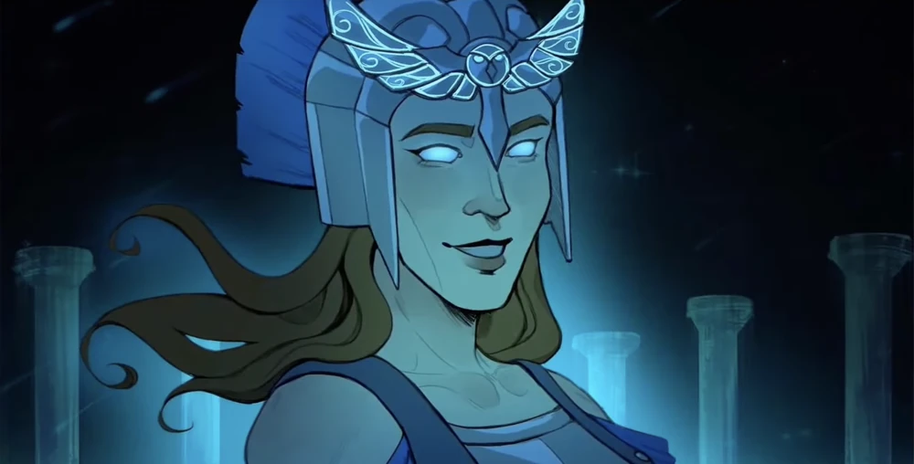
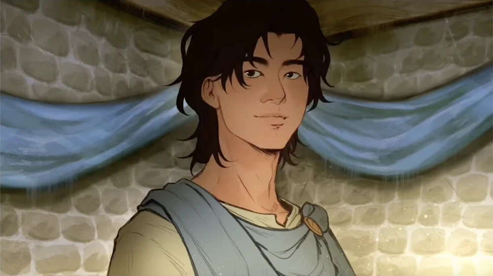
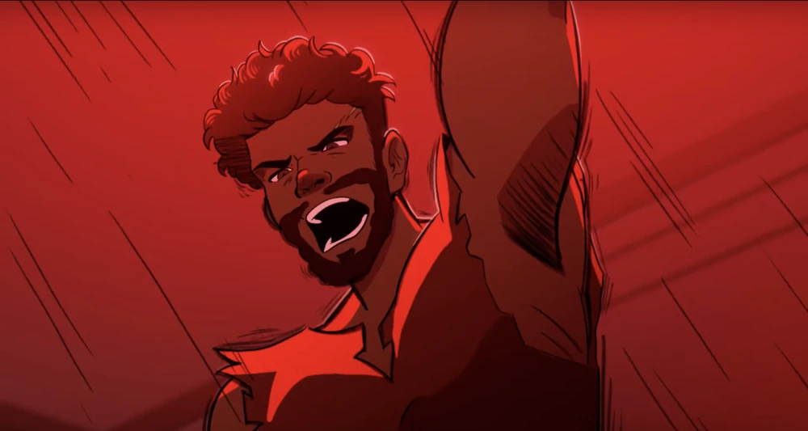
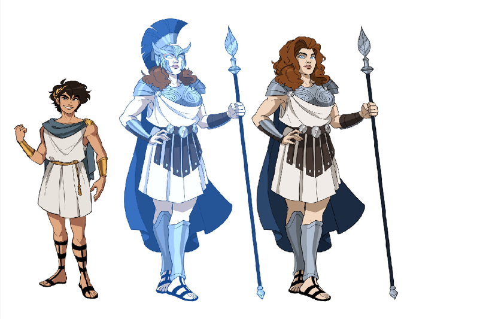

About
Nesse blog, irei apresentar um musical que alguns estudantes do cotuca ensenaram nessa terça-feira (1º de abril) no Salão Nobre.
O musical é um projeto interdisciplinar do segundo ano do ensino médio, integrando as matérias de Inglês e Educação Física. Os alunos são divididos em grupos e escolhem uma música que desejam apresentar.
Nesta edição, o grupo escolheu a música "Little Wolf" do musical "Epic", referenciando a mitologia grega.
Epic

Na mitologia, existem algumas epopeias, gênero literário caracterizado por contar grandes feitos. Na grega, Odisseia é uma das principais obras épicas, atribuída ao poeta grego Homero. Conta a jornada de Odisseu (Ulisses, em latim) de volta para casa (Ítaca), onde sua esposa Penélope e seu filho Telemachus o aguardam, após a Guerra de Troia, enfrentando deuses e monstros
Sabendo disso, Jorge Rivera-Herrans criou, inicialmente como tese, Epic, uma adaptação musical da Odisseia.O projeto começou em 2019 e ganhou popularidade em 2021 no TikTok. A primeira parte, The Troy Saga, saiu em 2022, seguida por The Cyclops Saga (2023) e The Ocean Saga (2023). Somente em agosto de 2024, estreou The Wisdom Saga. Nessa última saga, Telemachus, com 20 anos, luta para proteger sua mãe Penelope dos pretendentes. Athena intervém e, ao buscar respostas sobre Odisseu, descobre que ele está preso com Calipso. Para libertá-lo, Athena desafia Zeus e precisa convencer cinco deuses olímpicos, culminando no confronto entre ela e Zeus.
Little Wolf
Nesse projeto, escolhemos, dentro do contexto de "Epic", a música "Little Wolf", que faz parte da "The Wisdom Saga", onde, especificamente, Telemachus, fazendo referência a um lobo pequeno, enfrenta o pretendente Antinous para defender a honra de sua mãe, mas acaba sendo espancado. Athena, deusa da sabedoria, disfarçada, intervém e o salva. Após a luta, Telemachus pergunta por que ela o ajudou, e Athena reflete sobre seu passado com Odisseu, demonstrando arrependimento.
A referência utilizada para a coreografia foi esta animação:
Characters
Esse musical faz referência às seguintes figuras e são interpretadas pelos seguintes atores:
| Athena | Telemachus |
|---|---|
|  |  |
| Clara Alves dos Santos | Júlio Pacheco Stein |
| Deusa da sabedoria e guia Telemachus. | Filho de Odisseu e Penelope. |
| Antinous | Battle spectators |
|  | - |
| Eduardo Artigiani Lima Tribst | Lorrayne Argenton dos Santos |
| Pretendentes da mãe de Telemachus, o enfrentando. | Público dentro da peça, reagindo às cenas de confronto e encorajando na luta. |
As ilustrações foram retiradas daqui.
Production
Song Choice
O grupo teve liberdade para decidir qual canção interpretar e, depois de algumas sugestões, a Clara sugeriu "Little Wolf" e todos concordaram. A ligação com a mitologia grega nos chamou atenção, além do fato dessa história ser retratada de maneira tão moderna.
Rehearsal and challenges
Os professores reservaram algumas semanas de ensaio durante as aulas, permitindo que o grupo praticasse a interpretação e a coreografia. No início, houve desafios com a questão de como colocar em prática de modo realista sem se machucar. Além disso, ajustar o tempo da música e a movimentação no palco exigiu bastante esforço, ninguém estava confiante. No entanto, no fim, com muito preparo, o grupo foi ganhando confiança e melhorando a performance.
Costume
O figurino foi pensado para refletir o clima épico do musical, com roupas brancas e leves, sapatos abertos, acessórios dourados ou prateados e capas. As peças foram improvisadas com roupas que os alunos já possuíam, como calças, blusas e saias brancas, além de sandálias. A tiara, um acessório que um dos membros já tinha, foi um detalhe que facilitou a composição do visual. Infelizmente, a capa foi um item difícil de arranjar, exigindo mais esforço e adaptação para garantir que todos os personagens tivessem um figurino condizente com a proposta do espetáculo.
Behind the Scenes
Entre os ensaios e a apresentação, várias situações divertidas aconteceram. Entrevistando eles, fiz algumas descobertas:
Mariana (Writer):
- Clara, qual você diria que foi o momento mais engraçado na produção?
Clara (Athena):
- Um dos momentos mais engraçados foi quando o Júlio, quando a Athena entra de surpresa, fez uma cara exageradamente chocada, fazendo todos rirem.
Mariana (Writer):
- Entretanto, o Júlio já não concorda muito com isso. O que você diz, Júlio?
Júlio (Telemachus):
- Eu diria que foi muito engraçado quando eu soquei o Eduardo (Antinous) congelado e ele caiu no chão, foi difícil manter a seriedade durante esse momento.
Mariana (Writer):
- O que vocês acharam da esperiência do musical?
Clara (Athena):
- Foi mto cansativo e até um pouco estressante as vezes, mas é muito legal ver o resultado e realmente gostar do que você fez.
Júlio (Telemachus):
- No geral não achei tão legal. No final pode até ser meio divertido, mas, além de ter que apresentar pra bastante gente, muitas aulas são usadas pra isso, fazendo com que a gente acabe não tendo um aproveitamento pedagógico tão bom quanto teria com aulas normais. Então os pontos negativos acabam pesando mais que os positivos na minha opinião.
Lorrayne (Battle spectators):
- Por mais que o resultado seja divertido de assistir, acho que existem outras formas mais produtivas e eficientes de aprender inglês. O tempo que leva para a preparação e o real impacto do trabalho não compensa o esforço.
Mariana (Writer):
- Para vocês, qual foi a parte mais difícil de tudo isso?
Eduardo (Antinous):
- Provavelmente adaptar as cenas de luta.
Júlio (Telemachus):
- Tirando apresentar, acho que foi planejar a coreografia e lembrar do que tem que fazer.
Clara (Athena):
- A parte mais difícil foi montar a coreografia, com toda certeza, principalmente na parte das lutas.
Lorrayne (Battle spectators):
- O nervosismo da apresentação.
No fim, cada um teve sua própria experiência com o musical. Agradeço por compartilharem essa visão!